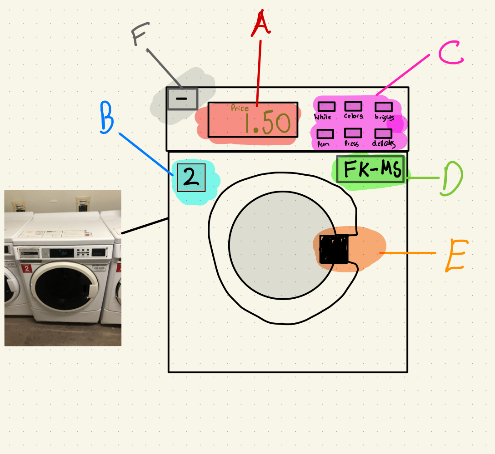

Brown University's Laundry Machine Interface
Note: As of September 12th, Brown is giving free laundry for students due to system maintenance. However, I will still be using the old interface for this assignment.
Part I: Preperation
Browns Laundry System contains multiple subcomponents. So let's just outline them below for fun!
- GET App: Students log into GET to add money to their bear bucks account
- Swipe Machine: Students swipe to use bear bucks to purchase a cycle for specificed machine using keypad
- LaundryView App: Students identify avaliable machines
- Laundry Machine : Students select washer settings and start machine
- Dryer Machine : Students select dryer settings and start machine
Sketch of BrownU Laundry Machine.
Interface Purpose: Addresses loading, unloading and selecting settings for washing machine. Each section has a specific function outlined below:

Part II: Recording Observations
Key Observations
- Most students try to reach their hand inside to check for any divorced socks
- Some students would set a timer once they load their clothes, many didnt!
- students varied alot in detergent type (tid pods/fluid) and products (color catchers etc).
- Most students are not aware of changing the mesh filter between cycles
- I found it interesting that alot of students forgot to fill up their bear bucks account until washing.
User Research Questions
- How many times a week do you do laundry?
- How many cycles does it take during your laundry day? Has there ever been times where you needed to rerun?
- How many times have you had to wait for a machine to become available? How long is the wait usually?
- What's your approach when all machines are occupied?
- On a scale of A to NC: How happy are with the student: machine ratio in your dorm?
- How do you feel about the state of your clothes after washing & drying?
- Do you seperate colors and whites?
- Do you use any supplemental products? (fabric softener, color catchers,dyer sheets)
- Whats your approach after loading a machine? What happens if you forget?
- What's your most frequent setting when washing & drying? Does the type of clothes impact your decision?
- How often are mechines busted? What do you usually do in those scenarios?
- Do you check your dorm chat often for any laundry alerts by other students? If so, How useful is it?
- is there anything you would like to add based off of your experience?
Summarized Responses
- Students generally had one laundry day per week, ranging from 1-3 cycles used.
- Students often had to wait for avaliability, ranging from 5-30 minutes. They seldom went to other dorms
- Dryers specifically were underpopulated and poor quality, hence dryer sheets being common among students
- No one seperated colors and whites, 'perm press' option used most frequently, irrespective of items.
- Despite alarms/timers, alot of machines were broken and most students werent sure who to call, opting to text the dorm chat instead.
Part III: Personas
Part IV: Storyboard
I have decided to go with Finn as my storyboard.